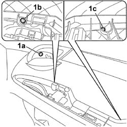
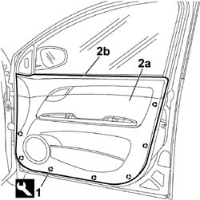
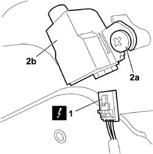
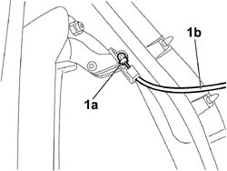

7005E10 FRONT SIDE DOOR INTERIOR PANEL - R.R.
- Path
- Procedures > 70 FITTINGS > 7005 PASSENGER COMPARTMENT FRONT SIDE DOORS > 7005E FRONT DOOR TRIM > 7005E10 FRONT SIDE DOOR INTERIOR PANEL - R.R.
- Kind
- repair procedure (removal / refitting; the operation number is the code)
- Applies to
- all engines; all production periods
- Interactive page
- https://sloeber94.github.io/elrnDB-fCrm/en/#/194000866
Applies to: all engines; all production periods
 Removing
Removing
 Refitting
Refitting- Open the front side door.
- Completely lower the window.
- Turn the ignition key to the OFF position.
- Disconnect the negative battery terminal.
Description | Connector | |
|---|---|---|
BATTERY |
Op. 7005E12 CORNER COVER FOR ONE FRONT SIDE DOOR, LH OR RH - R.R.
Op. 7005E14 TOP COVER OF FRONT SIDE DOOR INNER PANEL - R R OR REPLACE
Op. 7005M14 SWITCH UNIT ON DRIVER'S FRONT DOOR - R.R.
Op. 7005M12 PASSENGER SIDE FRONT DOOR ELECTRICALLY OPERATED WINDOW SWITCH - R.R.
Op. 7040E24 LOWER COURTESY LIGHT IN DOOR PANEL - R+R
1. Undo the fixing bolts (1a) and nuts (1b) and (1c).

Applies to: all engines; all production periods
1. Using the special tool, release the panel inner retaining clips.
Tool | Description | Function | Validity |
|---|---|---|---|
1878077000 | Knife | Retainer removal |
2. Remove the panel (2a) after having raised it to release the upper profile (2b) from the door frame.

Applies to: all engines; all production periods
Only for the left front door:
1. Disconnect the electrical connection for the deterrence led.
Description | Connector | |
|---|---|---|
1 | ALARM LED |
2. Undo the fixing bolts (2a) and remove the deterrent (2b).

Applies to: all engines; all production periods
1. Using the screwdriver, lift up the securing clip (1a) and release the connecting rod (1b) for the interior handle.

Applies to: all engines; all production periods
Refitting
Removing- Check that the panel is not damaged and check that the retaining clips are intact and correctly positioned.
- Attach the interior handle connecting rod.
- Position the deterrence led and tighten the bolts (only for the left front door).
- Connect the deterrence led electrical connection (only for the left front door).
Description | Connector | |
|---|---|---|
ALARM LED |
- Position the panel correctly on the top part matched with the inner glass scraper and press at the mounting points to fit the retaining clips.
- Tighten the retaining bolts.
Op. 7040E24 LOWER COURTESY LIGHT IN DOOR PANEL - R+R
Op. 7005M12 PASSENGER SIDE FRONT DOOR ELECTRICALLY OPERATED WINDOW SWITCH - R.R.
Op. 7005M14 SWITCH UNIT ON DRIVER'S FRONT DOOR - R.R.
Op. 7005E14 TOP COVER OF FRONT SIDE DOOR INNER PANEL - R R OR REPLACE
Op. 7005E12 CORNER COVER FOR ONE FRONT SIDE DOOR, LH OR RH - R.R.
- Connect the negative battery terminal.
Description | Connector | |
|---|---|---|
BATTERY |
Topics linked from this page (7)
- 7005E12 CORNER COVER FOR ONE FRONT SIDE DOOR, LH OR RH - R.R.
- 7005E14 TOP COVER OF FRONT SIDE DOOR INNER PANEL - R R OR REPLACE
- 7005M12 PASSENGER SIDE FRONT DOOR ELECTRICALLY OPERATED WINDOW SWITCH - R.R.
- 7005M14 SWITCH UNIT ON DRIVER'S FRONT DOOR - R.R.
- 7040E24 LOWER COURTESY LIGHT IN DOOR PANEL - R+R
- A001 BATTERY
- E040 ALARM LED
Topics that link to this page (23)
- S062 FRONT DOORS CREAKING
- 5505A42 CONTROL UNIT (DIGITAL NETWORK NODE) IN DRIVER'S DOOR - R.R.
- 5505A46 CONTROL UNIT (DIGITAL NETWORK NODE) IN PASSENGER SIDE DOOR - R.R.
- 5505B11 FRONT DOOR WIRING (ONE) LEFT OR RIGHT - R.R
- 5570T90 FRONT SPEAKER (ONE), LEFT OR RIGHT - R.R
- 5580E18 ANTI-THEFT DEVICE W/L - R+R FOLLOWING ELECTRICAL WIRING CHECK
- 7005A09 FRONT SIDE DOOR INTERIOR SUPPORT FRAME - R.R.
- 7005A28 FRONT SIDE DOOR LIMITER - R.R.
- 7005C11 FRONT SIDE DOOR EXTERIOR HANDLE - R.R
- 7005C15 FRONT SIDE DOOR LOCK BARREL (IN HANDLE) - R+R
- 7005C40 CONNECTION LINK BETWEEN FRONT SIDE DOOR INTERNAL OPENING MECHANISM AND CATCH ONE LH OR RH R R
- 7005C43 LINK CONNECTING FRONT SIDE DOOR BARRELS/CATCH - R+R
- 7005C53 FRONT SIDE DOOR INTERIOR OPENING HANDLE (ONE), LEFT OR RIGHT - R.R.
- 7005D15 FRONT SIDE DOOR DESCENDING WINDOW GLASS (ONE) LEFT OR RIGHT - R.R
- 7005D30 FRONT SIDE DESCENDING WINDOW GLASS SCRAPER (INNER) (ONE), LEFT OR RIGHT - R.R.
- 7005D33 CHANNEL FOR DOOR DESCENDING GLASS INNER GUIDE (ONE) LH OR RH ON FRONT SIDE DOOR - R.R.
- 7005E22 L/H OR R/H FRONT DOOR PANEL RADIO GRILLE (ONE) - R+R
- 7005M26 ELECTRIC WINDOW MECHANISM FOR ONE FRONT DOOR LH OR RH - R.R
- 7005M29 FRONT SIDE DOOR ELECTRICALLY OPERATED WINDOW MOTOR, LEFT OR RIGHT - R.R
- 7005N21 FRONT SIDE DOOR LOCK MOTOR/LOCK ASSEMBLEY FOR ONE DOOR, LEFT OR RIGHT - R.R.
- 7005R30 ELECTRICALLY CONTROLLED DOOR MIRROR (ONE) - R+R
- 7205E36 STRIPPING FRONT SIDE DOOR
- 7205E37 STRIPPING FRONT SIDE DOOR INTERIOR SUPPORT FRAME